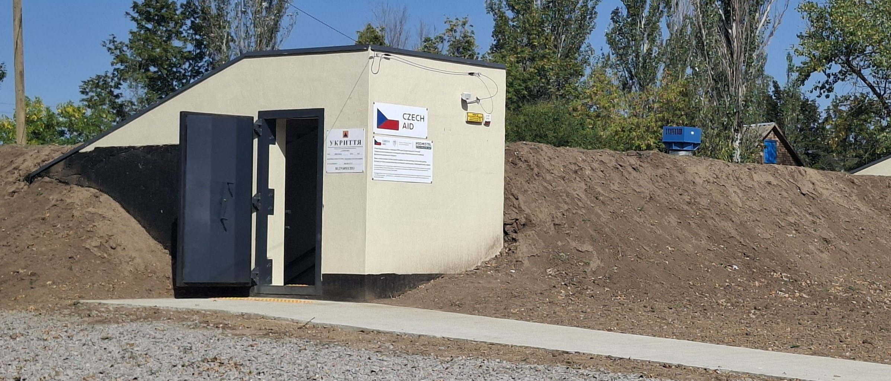
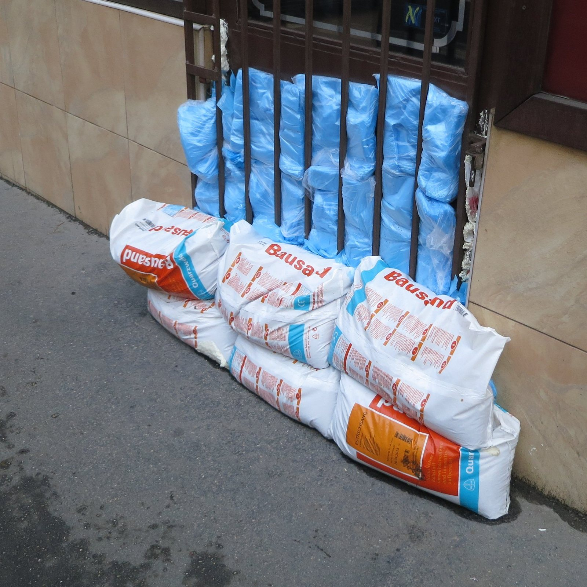
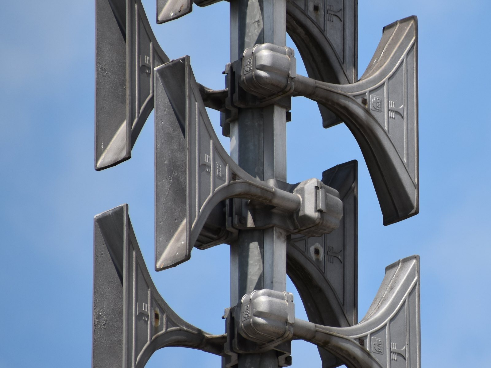
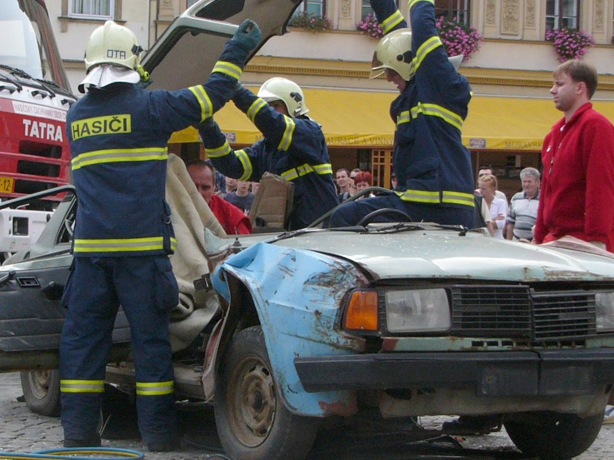

Zahájili jsme činnost
Asociace civilní ochrany vznikla na začátku roku 2026. Spojuje lidi a instituce, kterým záleží na připravenosti obcí a jejich obyvatel.

Ukázkový text, bude doplněn.
Proč asociace vznikla
Asociace civilní ochrany vznikla na začátku roku 2026 z potřeby propojit lidi a instituce, které se věnují připravenosti na mimořádné události. Chceme, aby informace a zkušenosti nekončily u jednotlivých úřadů a složek, ale dostaly se k obcím, školám i veřejnosti.
Civilní ochrana se týká každého. Připravenost na povodně, výpadky elektřiny a jiné mimořádné události začíná u srozumitelných informací a u lidí, kteří vědí, na koho se obrátit.


Co chceme dělat
Zaměřujeme se na osvětu, připravenost obyvatel, spolupráci se samosprávami a odbornou podporu. Postupně budeme zveřejňovat, na čem pracujeme a s kým.
Jednotlivé oblasti popisujeme na stránce Činnost. Aktuality doplníme, jakmile budou první projekty a akce připravené.




Jak se zapojit
Pokud vás naše činnost zajímá nebo chcete spolupracovat, napište nám. Odpovíme e-mailem.
Ozvat se mohou obce, instituce, školy, firmy, spolky i jednotlivci. Ve zprávě uveďte, kdo jste a s čím vám můžeme pomoci.